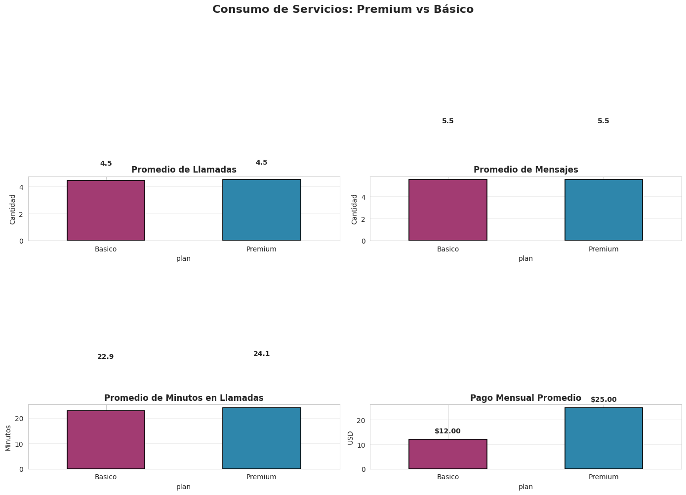
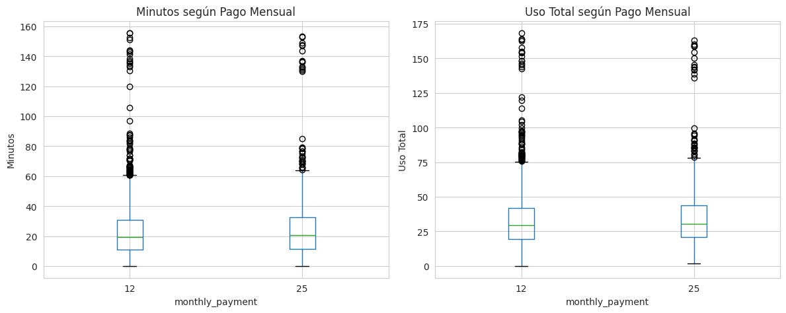
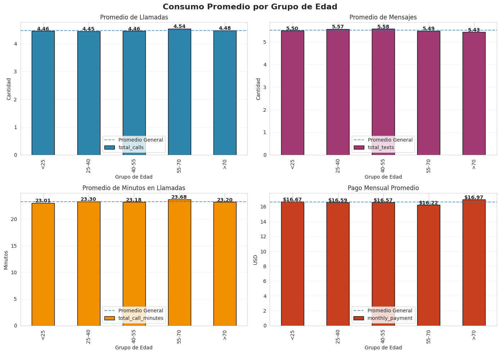
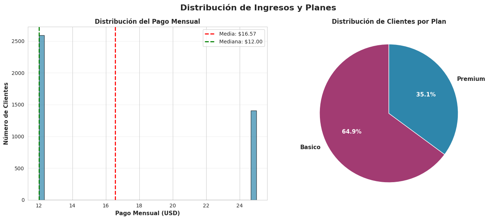

Identificación de los segmentos de mayor valor a través del análisis de patrones de uso y comportamiento.
La base de 4.000 clientes fue dividida en grupos iguales de 1.000 usuarios cada uno, permitiendo comparar niveles de valor y actividad de forma equilibrada.
Explora cada gráfica del análisis. Haz clic en los botones para navegar entre visualizaciones.




Al revisar los datos de la empresa se observa que no todos los clientes aportan el mismo valor. Para identificar las diferencias entre grupos, se clasificaron en cuatro segmentos de 1.000 clientes cada uno, permitiendo una comparación balanceada.
Esta segmentación permite entender qué tipo de clientes utilizan más los servicios y cuáles representan una mayor importancia estratégica para la empresa.
Se podría suponer que la edad influye en el uso de los servicios digitales. Sin embargo, el análisis muestra que los promedios de consumo son muy similares entre todos los rangos etarios.
Esto implica que la edad no es una variable útil para predecir el valor de un cliente ni para personalizar estrategias de retención.
Existe una diferencia de casi el doble en precio entre el plan Básico (~$12 USD) y el Premium (~$25 USD). Sin embargo, los datos revelan que el nivel de uso entre ambos planes es prácticamente el mismo.
Un usuario de plan Básico puede sobrevivir cómodamente con él, mientras que un usuario Premium podría obtener el mismo servicio pagando mucho menos. Esto sugiere que la diferenciación de planes actual no está bien alineada con el comportamiento real de uso.
El valor económico que aporta un cliente no siempre coincide con su nivel real de interacción. Los clientes de alto pago tienen niveles de actividad comparables a usuarios con planes mucho más económicos.
El verdadero segmento estratégico es el de Alto Valor Operativo: usuarios activos, frecuentes, y que generan la mayor cantidad de interacciones con los servicios de ConnectaTel.
Con base en el análisis, se proponen las siguientes acciones para mejorar la retención y el valor del cliente en ConnectaTel.